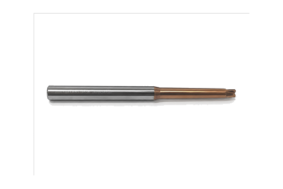

← Mikro Frezeler
Konik Uzun Dalmalar
Üreticiden konik uzun dalmalar — stoktan aynı gün kargo, aynı üründen 10+ adette dip fiyat.
KaplamaTSH — 55 HRC sınıfı
Kullanım alanı55 HRC sertliğe kadar
Çap toleransı (D1)0 / −0,02 mm
Şaft toleransı (D2)h6
KarbürMikro tane (ultra-fine)
MenşeiTürkiye — kendi üretimimiz
🚚 Aynı gün kargo
💵 Kapıda ödeme
↩ 14 gün iade
| ⌀ Çap | Boy | R | 10+ Adet | 5-9 Adet | 1-4 Adet | Sipariş |
|---|---|---|---|---|---|---|
| 1 | 16 | R0,2 | 34,54 $ | 36,50 $ | 39,25 $ | |
| 1 | 16 | — | 34,54 $ | 36,50 $ | 39,25 $ | |
| 1 | 24 | R0,2 | 34,54 $ | 36,50 $ | 39,25 $ | |
| 1 | 24 | — | 34,54 $ | 36,50 $ | 39,25 $ | |
| 1,5 | 16 | R0,2 | 34,54 $ | 36,50 $ | 39,25 $ | |
| 1,5 | 16 | — | 34,54 $ | 36,50 $ | 39,25 $ | |
| 1,5 | 24 | — | 34,54 $ | 36,50 $ | 39,25 $ | |
| 1,5 | 24 | R0,2 | 34,54 $ | 36,50 $ | 39,25 $ | |
| 1,5 | 32 | — | 34,54 $ | 36,50 $ | 39,25 $ | |
| 1,5 | 32 | R0,2 | 34,54 $ | 36,50 $ | 39,25 $ | |
| 2 | 16 | — | 34,54 $ | 36,50 $ | 39,25 $ | |
| 2 | 16 | R0,2 | 34,54 $ | 36,50 $ | 39,25 $ | |
| 2 | 20 | — | 34,54 $ | 36,50 $ | 39,25 $ | |
| 2 | 20 | R0,5 | 34,54 $ | 36,50 $ | 39,25 $ | |
| 2 | 20 | R0,2 | 34,54 $ | 36,50 $ | 39,25 $ | |
| 2 | 24 | — | 34,54 $ | 36,50 $ | 39,25 $ | |
| 2 | 24 | R0,2 | 34,54 $ | 36,50 $ | 39,25 $ | |
| 2 | 26 | R0,5 | 34,54 $ | 36,50 $ | 39,25 $ | |
| 2 | 28 | — | 34,54 $ | 36,50 $ | 39,25 $ | |
| 2 | 30 | — | 34,54 $ | 36,50 $ | 39,25 $ | |
| 2 | 30 | R0,5 | 34,54 $ | 36,50 $ | 39,25 $ | |
| 2 | 30 | R0,2 | 34,54 $ | 36,50 $ | 39,25 $ | |
| 2 | 32 | — | 34,54 $ | 36,50 $ | 39,25 $ | |
| 2 | 32 | R0,2 | 34,54 $ | 36,50 $ | 39,25 $ | |
| 2 | 50 | — | 43,56 $ | 46,04 $ | 49,50 $ | |
| 2 | 50 | R0,2 | 43,56 $ | 46,04 $ | 49,50 $ | |
| 2,5 | 16 | — | 34,54 $ | 36,50 $ | 39,25 $ | |
| 2,5 | 16 | R0,2 | 34,54 $ | 36,50 $ | 39,25 $ | |
| 2,5 | 24 | — | 34,54 $ | 36,50 $ | 39,25 $ | |
| 2,5 | 24 | R0,2 | 34,54 $ | 36,50 $ | 39,25 $ | |
| 2,5 | 32 | — | 34,54 $ | 36,50 $ | 39,25 $ | |
| 2,5 | 32 | R0,2 | 34,54 $ | 36,50 $ | 39,25 $ | |
| 2,5 | 50 | — | 43,56 $ | 46,04 $ | 49,50 $ | |
| 2,5 | 50 | R0,2 | 43,56 $ | 46,04 $ | 49,50 $ | |
| 3 | 20 | — | 34,54 $ | 36,50 $ | 39,25 $ | |
| 3 | 20 | R0,5 | 34,54 $ | 36,50 $ | 39,25 $ | |
| 3 | 20 | R1,0 | 34,54 $ | 36,50 $ | 39,25 $ | |
| 3 | 24 | — | 34,54 $ | 36,50 $ | 39,25 $ | |
| 3 | 24 | R0,2 | 34,54 $ | 36,50 $ | 39,25 $ | |
| 3 | 28 | R1,0 | 34,54 $ | 36,50 $ | 39,25 $ | |
| 3 | 28 | — | 34,54 $ | 36,50 $ | 39,25 $ | |
| 3 | 30 | — | 34,54 $ | 36,50 $ | 39,25 $ | |
| 3 | 30 | R0,5 | 34,54 $ | 36,50 $ | 39,25 $ | |
| 3 | 30 | R1,0 | 34,54 $ | 36,50 $ | 39,25 $ | |
| 3 | 32 | R0,2 | 34,54 $ | 36,50 $ | 39,25 $ | |
| 3 | 35 | — | 34,54 $ | 36,50 $ | 39,25 $ | |
| 3 | 40 | — | 43,56 $ | 46,04 $ | 49,50 $ | |
| 3 | 45 | — | 43,56 $ | 46,04 $ | 49,50 $ | |
| 3 | 45 | R0,5 | 43,56 $ | 46,04 $ | 49,50 $ | |
| 3 | 50 | — | 43,56 $ | 46,04 $ | 49,50 $ | |
| 3 | 50 | R0,2 | 43,56 $ | 46,04 $ | 49,50 $ | |
| 4 | 24 | — | 34,54 $ | 36,50 $ | 39,25 $ | |
| 4 | 24 | R0,2 | 34,54 $ | 36,50 $ | 39,25 $ | |
| 4 | 30 | — | 34,54 $ | 36,50 $ | 39,25 $ | |
| 4 | 30 | R0,5 | 34,54 $ | 36,50 $ | 39,25 $ | |
| 4 | 30 | R1,0 | 34,54 $ | 36,50 $ | 39,25 $ | |
| 4 | 32 | — | 34,54 $ | 36,50 $ | 39,25 $ | |
| 4 | 32 | R0,2 | 34,54 $ | 36,50 $ | 39,25 $ | |
| 4 | 35 | R1,0 | 34,54 $ | 36,50 $ | 39,25 $ | |
| 4 | 35 | — | 34,54 $ | 36,50 $ | 39,25 $ | |
| 4 | 45 | — | 43,56 $ | 46,04 $ | 49,50 $ | |
| 4 | 45 | R0,5 | 43,56 $ | 46,04 $ | 49,50 $ | |
| 4 | 50 | — | 43,56 $ | 46,04 $ | 49,50 $ | |
| 4 | 50 | R0,2 | 43,56 $ | 46,04 $ | 49,50 $ | |
| 4 | 130 | R0,2 | 43,56 $ | 46,04 $ | 49,50 $ |